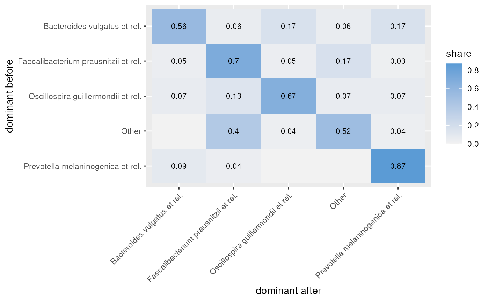
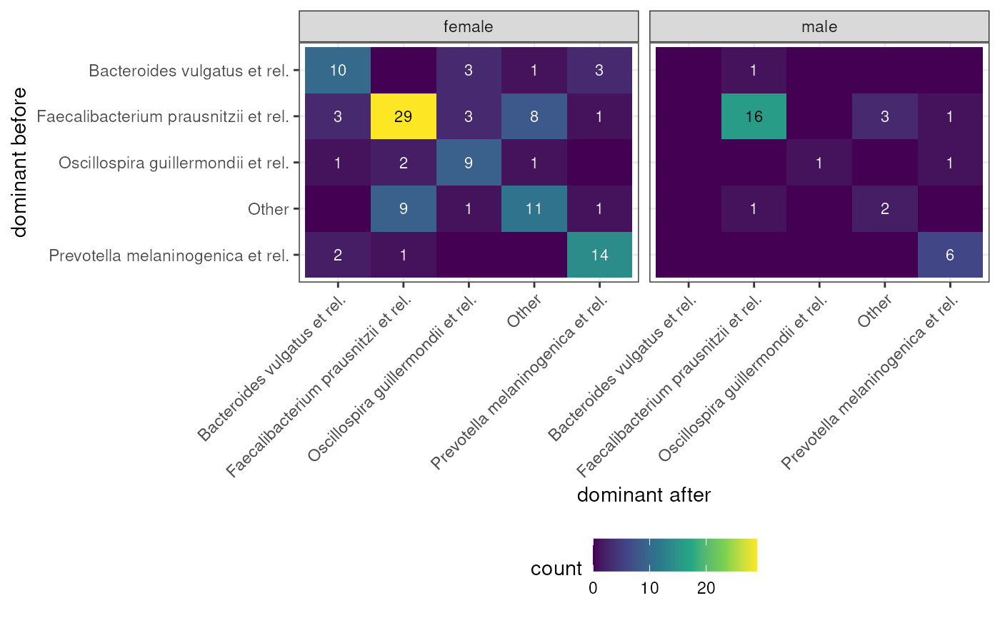

Plot transitions between states
Source:R/AllGenerics.R, R/plotTransitionMatrix.R, R/zzz-mae.R
plotTransitionMatrix.RdplotTransitionMatrix() counts the transitions between the states
of consecutive samples of each subject and draws them as a state by
state matrix.
Usage
plotTransitionMatrix(x, ...)
# S4 method for class 'SummarizedExperiment'
plotTransitionMatrix(
x,
state.col,
time.col,
group,
as.relative = TRUE,
facet.by = NULL,
max.gap = NULL,
...
)
# S4 method for class 'MultiAssayExperiment'
plotTransitionMatrix(x, ..., experiment = 1L)Arguments
- x
a
SummarizedExperimentobject.- ...
additional arguments passed to
geom_tile.- state.col
Character scalar. Specifies the column fromcolData(x)that contains the state of each sample, such as a community type or the dominant taxon.- time.col
Character scalar. Specifies the column fromcolData(x)that contains sampling times: numeric,Date,POSIXctor a factor of visits. Time differences, as inmax.gap, are in days forDateand hours forPOSIXcttimes.- group
Character scalar. Specifies the column fromcolData(x)that identifies subjects.- as.relative
Logical scalar. Shows the share of transitions from each state (TRUE) or the counts (FALSE). (Default:TRUE)- facet.by
Character scalar. Specifies the column fromcolData(x)that splits the transitions into panels. Each transition takes the value of its later sample. (Default:NULL)- max.gap
Numeric scalar. Skips the transitions between consecutive samples of a subject that are further apart than this, intime.colunits. For visits,NULLskips transitions across visits without a sample; otherwiseNULLcounts all of them. (Default:NULL)- experiment
Character scalarorinteger scalar. For aMultiAssayExperiment, the experiment to plot; its samples get thecolDataofx. (Default:1L)
Details
Rows are the state before a transition and columns the state after it; the diagonal holds the samples that stayed in their state. Samples with a missing state break the chain: no transition is counted to or from them.
Examples
# Dominant genus of each sample: the four most common and "Other"
data("hitchip1006", package = "miaTime")
tse <- mia::addDominant(hitchip1006, name = "dominant", n = 4)
plotTransitionMatrix(tse, state.col = "dominant", time.col = "time",
group = "subject")
#> Warning: 'group' has 929 subjects with a single sample.

# Counts by sex
plotTransitionMatrix(tse, state.col = "dominant", time.col = "time",
group = "subject", as.relative = FALSE, facet.by = "sex")
#> Warning: 'group' has 929 subjects with a single sample.
